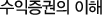
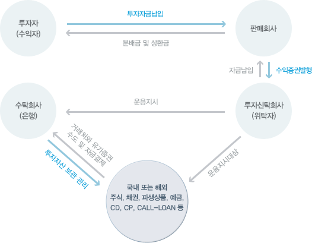
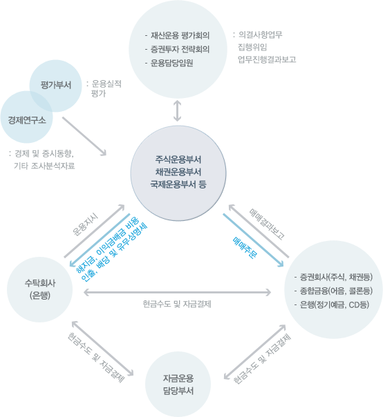

수익증권

수익증권(증권투자신탁)란 일반 투자자로부터 증권투자에 운용할 목적으로 자금 등을 납입 받은 위탁자가 그 자금 등(일반적으로 신탁재산이라고 한다)을 수탁자로 하여금 당해 위탁자의 운용지시에 따라 특정 유가증권에 투자/운용하고, 그에 따른 수익권을 분할하여 당해 투자자에게 취득시키는 것을 말합니다.

-
공동투자
일반투자가로부터 소액의 자금을 모아 거액의 자금을 조성하여 소액자금으로는 불가능한 여러 가지의 증권에 분산투자가 가능합니다.
-
전문성
풍부한 경험과 전문지식을 갖춘 금융전문가들이 고객을 대신해서 재산을 운용합니다.
-
분산투자
투자자산의 위험을 극소화하기 위하여 다양한 유가증권에 나누어서 투자를 합니다.
-
수익성
우량 국공사채 및 대형 우량주에 대한 과학적인 분석과 효율적인 관리로 높은 수익을 추구합니다.
-
안전성
투자자가 맡긴 자금을 운용회사의 고유재산과 구분하여 은행과 증권예탁원 등 수탁기관에 별도 보관하기 때문에�투자자는 해당 상품에 관련된 위험을 제외하고는 안전하게 관리됩니다.
-
다양성
자유롭게 거래하는 임의식, 매월 이자인출이 가능한 거치식, 그리고 목돈마련에 적합한 적립식까지 투자자의�투자목적과 재산규모에 맞는 다양한 상품들이 있습니다.
| 분류 |
형태 |
주요내용 |
| 조직형태 |
계약형 |
수익자, 위탁자, 수탁자 등의 계약형태 |
| 회사형 |
주식회사로서 조직, 투자자가 주주가되는 형태 |
| 환매가능 여부 |
개방형 |
언제라도 현금화가 가능한 형태 |
| 개방형 |
언제라도 현금화가 가능한 형태 |
| 추가설정 가능여부 |
추가형 |
추가로 자금을 증액하여 설정가능한 형태 |
| 단위형 |
추가로 자금을 증액할 수 없는 형태 |
| 편입대상상품 |
주식형 |
투자신탁자산총액의 100분의 60 이상을 주식(주가지수선물 옵션을 포함한다)으로 운용하는 투자신탁상품 |
| 혼합형 |
채권투자신탁(MMF포함) |
| 채권형 |
투자신탁에 주식이 편입되지 아니하고, 투자신탁자산총액의 100분의 60 이상을�채권(금리선물을 포함함다)으로 운용하는 투자신탁상품 다만 2000년 6월 이전에�설정된 기존의 공사채형 투자신탁의 경우 편입비에 관계없이 채권형으로 분류한다. |
| 운용대상의 변경 |
고정형 |
최초 설정 당시 투자종목이 정해지면 계약이 종료될때까지 변경하지 못하는 방식 |
| 융통형 |
투자대상의 변경을 운용자의 재량에 맡기는 형태 |
| 상장여부 |
상장형 |
수익증권 또는 주권이 증권거래소에 상장되어 거래되는 형태 |
| 비상장형 |
수익증권 또는 주권이 증권거래소에 상장되지 않고 거래되는 형태 |
| 투자 지역별 |
국내투자형 |
모집된 자금을 국내에서 발행된 유가증권 등에 투자하는 형태 |
| 해외투자형 |
모집된 자금을 해외에서 발행된 유가증권 등에 투자하는 형태 |
| 혼합형 |
모집된 자금을 국내 및 해외에서 발행된 유가증권 등에 투자하는 형태 |

-
수익증권 환매란?
- 투자자가 자신이 보유하고 있는 수익증권을 투자신탁운용회사 또는 판매회사에 되파는 방법으로 현금화 하는 것
- 투자신탁 운용회사와 판매회사는 환매청구가 있는 경우, 15일 이내에 응하여야 하며, 각 펀드별로 각각 다른 기준가 적용일과 환매대금 지급일을 가지고 있다.
- 지급액 및 환매대금의 결정
환매대금 = 환매좌수 * 환매기준가격
지급액 = 환매대금 - 환매수수료 - 세금
-
환매수수료란?
- 펀드별로 각각 정해진 기간안에 수익증권을 환매할 때 수익자로부터 징구하는 것으로서 수익증권의 환매를 억제함으로써 투자신탁의 운용에 안정을 기하고, 환매에 따른 사무처리 비용에 충당 또는 잔여 수익자의 권익을 보호하기 위하여 징구하는 일종의 중도해지에 따른 위약금(Penalty) 또는 수수료(Fee, Charge)의 성격입니다. 환매수수료를 징구하여 위탁회사 또는 판매회사의 수입으로 처리하는 경우도 있고 펀드에 환입시키는 방법을 취하는 경우도 있으나, 일반적으로 펀드환입시키는 방법을 취하고 있습니다.